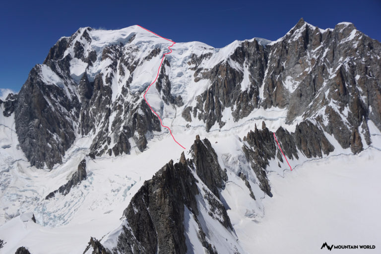

Моя друга вершина - Монблан
Монблан це не тільки прості класичні маршрути, якими всі ходять. На найвищу точку Альп прокладено безліч ліній, включаючи гранично важкі. Нижче описаний маршрут середньої складності, але високою цікавинки - контрфорс Бренва.
Brenva Spur або Eperon de la Brenva - так називається маршрут в місцевих джерелах. Класичний варіант початку маршруту з огляду на камнепадоопасності зараз не ходять. Починають за спрощеним варіантом Гусфельда - Gussfeld start. Охарактеризований маршрут в гайдбуках так: загальна технічна складність - D, ледолазная труднощі - 3, лід до 60 °; залученість, загальна «проблемність» маршруту IV; перепад технічної частини 800м. Тобто по-нашому це довга, напружена льодова 4А.
Води по дорозі майже немає, тільки в самому низу або невеликі струмочки від талого снігу. І взагалі далі починається "безводна зона" - сніг, лід, в хатинах платно (5 - 7 євро за 1,5 літрову пляшку) ... Час у дорозі від трамвая до Тет Руса приблизно 2 години. Сам притулок Тет Рос знаходиться на краю льодовика Тет Рус, розташованого на майже плоскому плато. Місце досить вітряне і не дуже затишне. Воду в притулку набрати не можна, навіть в туалеті, можна тільки купити за 5 євро за 1,5 л пляшку. Але є один "лайфхак" - воду в туалеті включають увечері, щоб ті хто ночує в проюте могли вмитися. Тобто приблизно в 8 вечора є можливість набрати воду в туалеті притулку. Місце в притулку потрібно бронювати заздалегідь через великої кількості людей. Притулок Тет Рос був відреставрований в 2003 році, в ньому можуть розміститися до 72 осіб. На плато неподалік від притулку можна поставити намет. У сезон тут стоїть безліч наметів тих, хто планує сходження на Монблан. Вище цього місця встановлення наметів заборонена, тому всі хто вирішили не ночувати в притулках, з яких-небудь причин, змушені починати сходження звідси. самостійне сходження на Монблан, Тет Рос Відразу від притулку Тет Рос починається стежка до притулку Гутер (Гуте, Гютера). Спочатку стежка проходить по льодовику Тет Рус і починає піднімається по снежники, і доходячи до скель перетинає Гранд Кулуар. Це найризикованіша частина маршруту. Кулуар шириною метрів 50-70, за яким постійно сипляться камені і шматки льоду. До того ж посередині кулуара тече струмок, через який треба перебиратися. Може бути лід або замерзла сніжна каша, а може бути і не замерзла ... Кулуар розташований на західному схилі, тому ввечері камені падають особливо часто. Але і в першій половині дня перетин кулуара справа захоплююча. Все таки по всіх рекомендацій, краще його проходити в першій половині дня, поки він не освітлений сонцем. Поперек Гранд кулуара натягнутий сталевий трос для страховки, але толку від нього мало, так як він натягнутий в парі метрів над землею.